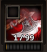
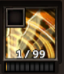
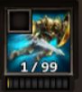
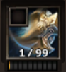
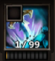

Harcos képességek
A harcos karakterem még csak 21-es szintű, ezért az összes képességét még nem tudom bemutatni.
Maim:
Az egyik legjobb közelharci képesség, ami egy ellenség ellen hat, alacsony újratöltési idővel. Egy bizonyos százalék esélye van annak, hogy a földre vigye az ellenséget.
Cleave:
Több ellenség ellen ható közelharci képesség. A karakter forgásba kezd és így sebzi meg az ellenséget.
Charge:
Távolsági képesség, aminek segítségével, a karakter nekirohan az ellenfélnek és az útjába esőket megsebzi.
Hurl:
Távolharci képesség, a karakter a pajzsát eldobva fejt ki sebzést a lövedék útjába esőkre.
Rumble:
Harcos a kardját a földbe mélyesztve a karakter körüli kisebb területen földrengést okoz, amivel nem csak kárt tesz az ellenfélben, hanem egy bizonyos időre elkábítja őket.